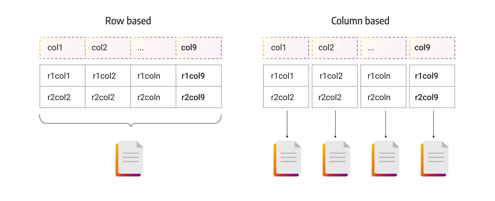
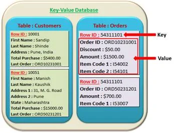

Module 10: Modern & AI Data Systems · Lecture 42 · Week 15
NoSQL Databases
Document, key-value, wide-column, and graph stores: when and why to go beyond relational
Learning Objectives
- State the four major NoSQL data models and name a representative system for each
- Explain the CAP theorem and identify the trade-offs made by CP vs. AP systems
- Describe the BASE consistency model and contrast it with ACID
- Choose the appropriate data store for a given application requirement

1. Why NoSQL?
Relational databases excel when data is strongly structured, relationships are complex, and ACID guarantees are required. NoSQL systems emerged to address workloads where these assumptions break down:
- Scale: web-scale systems (billions of users, petabytes of data) demand horizontal sharding across hundreds of commodity servers: hard to achieve with a single RDBMS
- Schema flexibility: social network profiles, IoT sensor readings, and user-generated content have strongly variable structure
- Access pattern optimization: some applications need O(1) key lookups, others need graph traversals: no single relational schema serves all equally well
- Developer productivity: matching the programming model (e.g., storing JavaScript objects directly as JSON) reduces impedance mismatch
NoSQL ≠ No SQL, No Transactions, No Relations
The term "NoSQL" is misleading. Many NoSQL systems now support SQL-like query languages (e.g., CQL in Cassandra, N1QL in Couchbase). Several support multi-document transactions (MongoDB since 4.0, DynamoDB with transactions). "NoSQL" is best read as "Not Only SQL": these are complementary tools, not replacements.
2. The Four NoSQL Data Models
Key-Value Stores
The simplest model: store and retrieve opaque values by a unique key. O(1) get/put/delete. Examples: Redis, DynamoDB, Riak. Best for: caching, session storage, feature flags, leaderboards.
Document Stores
Extend key-value by storing structured, self-describing documents (JSON/BSON). Rich query languages, secondary indexes, aggregation pipelines. Examples: MongoDB, Couchbase, Firestore. Best for: catalogs, user profiles, CMS, event logs.
Wide-Column Stores
Rows have a primary key; each row may have a different set of columns. Optimized for write-heavy analytical workloads. Examples: Apache Cassandra, HBase, Google Bigtable. Best for: time-series, IoT, recommendations.
Graph Databases
Nodes and edges with properties; traversal queries are native (no expensive joins). Examples: Neo4j, Amazon Neptune, ArangoDB. Best for: social networks, fraud detection, knowledge graphs, recommendation engines.
3. Key-Value Stores in Detail

3.1 Redis
Redis is an in-memory key-value store that supports rich value types: strings, lists, sets, sorted sets, hashes, bitmaps, and streams. Because it operates in RAM, reads and writes complete in microseconds. Data is optionally persisted via RDB snapshots or AOF (append-only file) logging.
3.2 DynamoDB
AWS DynamoDB is a fully managed key-value and document store. Each table has a primary key (partition key, optionally with a sort key). Horizontal sharding is automatic. Provides single-digit millisecond latency at any scale. Pricing is per read/write unit; provisioned or on-demand modes.
4. Document Databases in Detail
4.1 MongoDB
MongoDB stores documents as BSON (Binary JSON). A document can embed sub-documents and arrays, allowing complex structures to be retrieved in a single operation (no joins required for common access patterns).
4.2 Embedding vs. Referencing
| Embed (sub-document) | Reference (foreign key) | |
|---|---|---|
| Use when | Data is accessed together; 1:few relationship; child rarely changes independently | Many-to-many; data is large; child updated frequently; shared across documents |
| Read cost | 1 query, 1 document fetch | 2 queries (lookup reference, then fetch) |
| Write cost | Update the whole document | Update child independently |
| Duplication | Data may be duplicated if shared | No duplication; authoritative source |
5. Wide-Column Stores: Apache Cassandra
Cassandra uses a partition key to hash data across nodes and a clustering key to sort rows within a partition. This design keeps writes rapid (log-structured merge-tree storage), but schema design must be driven by query patterns.
6. CAP Theorem
CAP Theorem (Brewer 2000, proved 2002)
In a distributed system, you can guarantee at most two of three properties simultaneously:
Consistency: every read receives the most recent write (or an error)
Availability: every request receives a (non-error) response, even if it may be stale
Partition tolerance: the system continues operating despite network partitions
Because network partitions cannot be avoided in practice, the real trade-off is between C and A.
| System Type | Trade-off | Examples | Best For |
|---|---|---|---|
| CP (Consistent + Partition-tolerant) | May reject requests during partitions to stay consistent | HBase, MongoDB (with majority write concern), Zookeeper | Financial data, inventory, config management |
| AP (Available + Partition-tolerant) | Always responds, but response may be stale | Cassandra, CouchDB, DynamoDB (eventual consistency) | Social feeds, shopping carts, DNS, CDN |
7. BASE vs. ACID
| ACID (RDBMS) | BASE (NoSQL) | |
|---|---|---|
| Acronym | Atomic, Consistent, Isolated, Durable | Basically Available, Soft state, Eventually consistent |
| Consistency | Strong (immediately consistent after commit) | Eventual (replicas converge over time) |
| Availability | May reject operations during failures | Always responds (even if stale) |
| Suitable for | Banking, e-commerce, healthcare records | Social media, analytics, IoT, caching |
8. Choosing the Right Database
| If you need… | Consider |
|---|---|
| Complex joins, strong ACID, mature tooling | PostgreSQL, SQL Server, MySQL |
| Flexible schema, hierarchical documents, fast aggregations | MongoDB, Couchbase |
| Millisecond key lookups, caching, pub/sub | Redis, Memcached |
| Massive write throughput, time-series, multi-region | Cassandra, HBase |
| Graph traversal, relationship queries | Neo4j, Amazon Neptune |
| Semantic search, vector similarity | Pinecone, Weaviate, pgvector (see L43) |
9. Summary
- NoSQL systems trade relational features (joins, strong ACID) for scale, flexibility, or performance
- Four models: key-value (Redis, DynamoDB), document (MongoDB), wide-column (Cassandra), graph (Neo4j)
- CAP theorem: distributed systems choose between consistency and availability when a partition occurs
- BASE (eventual consistency) allows AP systems to remain available at the cost of immediate consistency
- The right data store depends on the access patterns, consistency requirements, and scale of the application